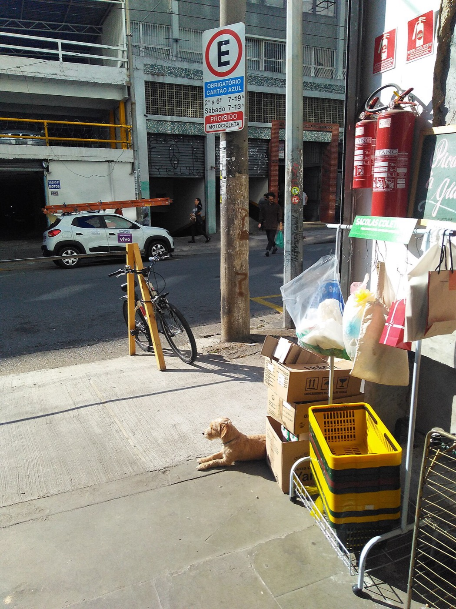

22 posts, cada um com card 16:9 pronto para screenshot e texto longo copiável. Arco: a confissão que a própria Atlas imprime na página de metodologia (1–3) → as 139 cidades que o Datafolha repete há três ondas, os dois estados em que ele nunca põe o pé e as seis entrevistas por setor (4–11) → a conta de Kish que derruba o segundo turno e poupa o primeiro (12) → do outro lado do espelho, o anúncio que recruta a Atlas e a cota de renda tirada de uma foto de 2024 (13–16) → a virada: por que a pesquisa que erra o país acerta a internet do país (17) → a conta da sucessão, a diáspora de 2022 e o mapa do medo (18–21) → veredito e a mesma cobrança para os dois institutos (22). Sem hashtag: o X premia conteúdo, não tag.
Como publicar: screenshot em cada card (16:9 exato), “Copiar texto” para o corpo do post, publicar na ordem. Dossiê-mãe: brasil.arvor.co/atlas_072026.html · Auditoria Datafolha: brasil.arvor.co/datafolha_072026.html
Fontes públicas: relatório, questionário, DRE, declaração e registro AtlasIntel/Bloomberg 07/2026 (TSE BR-08602/2026, campo 22–27/07, n=5.021); relatório, nota fiscal e anexo de bairros Datafolha 07/2026 (TSE BR-01166/2026, campo 22–23/07, n=2.004, 139 municípios, pontos de fluxo) e os anexos equivalentes de maio e junho; TSE Eleitorado Atual; IBGE PNAD Contínua. Microdados PNADC anual 2024 (visita 5) e 2025 (visita 1) para a régua de renda. Reprodução: scripts/atlas-072026-audit.py, scripts/atlas-072026-renda.py e scripts/datafolha-072026-cidades.py em github.com/ArvorCo/PNAD. Feito pelos agentes de IA da Arvor.
~992 charsDe junho para julho, o Datafolha trocou duas cidades da amostra. Duas, em 139.
Auditei documento por documento as duas pesquisas que dominaram julho: AtlasIntel/Bloomberg e Datafolha. O resultado é mais interessante do que “qual está certa”.
A Atlas recruta na internet. O entrevistado aparece navegando, clica num anúncio e responde 100+ perguntas sozinho. Isso a torna ruim como placar nacional e excelente como retrato de quem está alcançável ONLINE.
O Datafolha faz o oposto. Manda entrevistador para 331 pontos de fluxo em 139 municípios e aborda quem passa. Isso a torna melhor como estimador, e um retrato de quem estava NA RUA naquela terça e quarta-feira.
Erros opostos. Nenhum dos dois é o Brasil.
Nos anexos territoriais das últimas três rodadas do Datafolha há um padrão que ainda não vi ninguém comentar: 118 municípios idênticos em maio, junho e julho.
Vou mostrar tudo. E no fim mostro por que a Atlas, mesmo “errada”, é o melhor mapa que a campanha do Flávio tem. Thread
A Atlas descreve o método do concorrente e entrega os dois de uma vez
Na própria página de metodologia, a Atlas escreve que o RDR evita “o eventual impacto psicológico da interação humana” presente em pesquisas “presenciais domiciliares ou em pontos de fluxo”.
Ponto de fluxo é exatamente o método do Datafolha. A frase é uma crítica correta e uma admissão de que os dois desenhos selecionam populações diferentes.
AA Atlas admite: quem responde na frente de um entrevistador responde diferente.
BMas não admite: quem clica num anúncio de pesquisa política é diferente de quem não clica.
CO Datafolha não admite: quem está na rua às 14h de quarta é diferente de quem não está.
?Os dois vieses existem. Nenhum dos dois institutos publica o diagnóstico que permitiria medi-los.
~918 charsPágina 4 do relatório da Atlas. A parte que ninguém lê.
Ao explicar por que o método dela seria superior, a Atlas escreve que o recrutamento digital evita “o eventual impacto psicológico da interação humana sobre o respondente na hora da entrevista”, presente em pesquisas “presenciais domiciliares OU EM PONTOS DE FLUXO”.
Ponto de fluxo é, literalmente, o método do Datafolha.
E a crítica está certa. Gente responde diferente quando tem um estranho com prancheta na frente, sobretudo sobre voto, e sobretudo em país polarizado.
Só que a frase entrega os dois. Porque se o entrevistador introduz viés, o anúncio também introduz. Quem clica num convite pago para responder sobre eleição não é uma amostra aleatória de brasileiros: é uma amostra de brasileiros com opinião política forte o bastante para clicar.
A Atlas viu o cisco no olho do vizinho. Aqui a régua é a mesma para os dois: vamos olhar os dois olhos.
“Pesquisa nacional” é alguém parando você na esquina
Ponto de fluxo é a rua, a praça, a porta do mercado, o terminal. O entrevistador fica ali e aborda quem passa até fechar as cotas de sexo, idade, escolaridade e renda.
Não é sorteio de domicílio. É quem estava passando.

Ilustração · foto Wagner Tamanaha, CC BY-SA 2.0. Não retrata a coleta do Datafolha.
arvor intelligence · datafolha 07/2026fonte: registro TSE BR-01166/2026
~915 charsPonto de fluxo é a rua. Está escrito no registro do TSE, e quase ninguém sabe o que a expressão descreve.
É a praça central, a porta do supermercado, o terminal de ônibus, a feira. O entrevistador se posiciona ali e aborda quem passa, até fechar as cotas: tantos homens, tantas mulheres, tantos de cada faixa de idade, escolaridade e renda.
Não é sorteio de domicílio. Não é lista de eleitor. É quem estava passando ali naquele momento.
Isso tem uma consequência que quase nunca é dita: a pesquisa mede desproporcionalmente quem ESTAVA FORA DE CASA no horário da abordagem. Aposentado, trabalhador informal, estudante, quem foi ao centro fazer compra.
E mede de menos quem estava no escritório, no turno fechado da fábrica, dentro do condomínio, ou trabalhando de casa.
Não é fraude. É desenho. Mas é um desenho que precisa ser conhecido para ser interpretado corretamente.
Com isso na cabeça, agora o achado.
São sempre as mesmas cidades. E ninguém foi conferir.
O Brasil tem 5.570 municípios. O Datafolha nacional usa 139. Desses, 118 são exatamente os mesmos nas três últimas ondas.
87,4% de todas as entrevistas de julho foram feitas em cidades que também estavam no campo de maio.
87,4%
1.752 das 2.004 entrevistas de julho ocorreram em municípios herdados de maio e junho.
maio139
junho139
julho139
nas três118
arvor intelligence · datafolha 05–07/2026fonte: anexos de bairros, extração reproduzível
~925 charsO Brasil tem 5.570 municípios. O Datafolha nacional trabalha com 139.
E 118 desses 139 são EXATAMENTE OS MESMOS nas três ondas.
Peguei os anexos territoriais das três últimas pesquisas nacionais do Datafolha, maio, junho e julho, e comparei município por município pelo geocódigo do IBGE. Não pelo nome do bairro: pelo código.
Traduzindo em entrevistas: 1.752 das 2.004 entrevistas de julho, 87,4%, foram feitas em cidades que já estavam no campo de maio.
Quando você lê “Datafolha ouviu 2.004 eleitores em 139 municípios”, o que está lendo não é “um novo recorte do Brasil”. É a mesma lista de cidades, de novo.
Isso tem explicação legítima, e chego a ela daqui a pouco. Amostra-mestra fixa é prática consagrada e serve para medir MUDANÇA com mais precisão.
Mas tem consequências que ninguém publica. E tem uma pergunta que precisa ser feita.
Antes da explicação, olha o número que me deixou realmente desconfortável.
Em um mês inteiro, o Brasil do Datafolha mudou duas cidades.
De 139 municípios, saíram dois e entraram dois. 137 permaneceram, 98,6%.
E os quatro envolvidos são do mesmo estado.
↑ saiuRIO CLARO / SP
↑ saiuSEVERÍNIA / SP
↓ entrouOUROESTE / SP
↓ entrouPIRACICABA / SP
Duas trocas em 139 municípios. As quatro cidades em São Paulo. Nenhuma explicação publicada.
arvor intelligence · datafolha 06 → 07/2026comparação por geocódigo IBGE de 7 dígitos
~1021 charsEste é o número.
SAÍRAM: Rio Claro (SP) e Severínia (SP).
ENTRARAM: Ouroeste (SP) e Piracicaba (SP).
É essa a mudança inteira da lista de municípios do Datafolha nacional de junho para julho. Duas trocas, em 139 municípios. Permaneceram 137, ou 98,6%.
E repare: as quatro cidades envolvidas são do mesmo estado. A rotação inteira do desenho amostral nacional aconteceu dentro de São Paulo.
Compare com maio para junho, quando 19 municípios saíram, espalhados por PA, SC, MG, CE, RO, PR, BA, MT, PI. Ali havia rotação de verdade, nacional.
Em julho, não. Em julho a lista congelou.
Por que uma rodada roda 19 cidades e a seguinte roda 2? Qual é a regra? É sorteio? É reposição por perda de campo? É estrato? É custo?
Não sei. E é exatamente esse o problema: o Datafolha não publica o critério de rotação da amostra, as probabilidades de seleção, nem os estratos.
Sem isso, não dá para distinguir uma amostra-mestra bem desenhada de um circuito operacional confortável. E as duas coisas produzem números diferentes.
As cidades congelaram. Os setores, ao contrário, giraram
De maio para junho, 77% dos setores censitários se repetiram. De junho para julho, só 20,9%.
Em junho auditamos e apontamos os 77%. Em julho a rotação de setores voltou. Não afirmo causalidade, mas o contraste merece explicação pública.
Setores mai → jun77,0%
Setores jun → jul20,9%
Municípios jun → jul98,6%
Rótulos de bairro jun → jul51,7%
O setor mudou. O bairro, metade. A cidade, quase nada.
arvor intelligence · datafolha 05–07/2026331 pontos por onda · geocódigo de 15 dígitos
~973 charsO dado tem duas camadas, e elas se contradizem.
O município quase não mudou de junho para julho: 98,6% permaneceram.
Mas o SETOR CENSITÁRIO, a unidade fina, o quarteirão, o geocódigo de 15 dígitos do IBGE, mudou muito: só 20,9% se repetiram.
E aqui está o contraste que me fez voltar aos arquivos: de MAIO para JUNHO, 77% dos setores tinham se repetido.
Em junho, o Datafolha refez a pesquisa em três de cada quatro quarteirões de maio. Em julho, refez em um de cada cinco.
A régua mudou no meio da série. E mudança de régua no meio da série é o tipo de coisa que altera a comparabilidade entre ondas, que é justamente o que uma pesquisa mensal existe para medir.
Auditamos e publicamos os 77% em junho. Em julho, a rotação voltou.
Não afirmo que uma coisa causou a outra. Não tenho como saber, e quem afirma sem prova está fazendo o mesmo que critica.
Afirmo o que é verificável: o critério mudou, o instituto não explicou, e ninguém perguntou.
Estou perguntando.
Porque quem confere olha o nome do bairro. Nome de bairro não é unidade amostral.
“Centro” aparece em dezenas de cidades. Uma cidade grande tem centenas de setores censitários. Comparar rótulo de bairro dá 51,7% de repetição; comparar geocódigo de 15 dígitos dá 20,9%. São conclusões opostas a partir do mesmo PDF.
Toda a auditoria desta casa compara geocódigo. É a única unidade que o IBGE define, que não muda de nome e que permite bater o dado contra a malha censitária oficial. E foi só assim que a repetição de municípios apareceu.
Comparando rótulo de bairro51,7%
Comparando geocódigo de 15 dígitos20,9%
Municípios repetidos jun → jul98,6%
Rótulo repete. Geocódigo, não.
arvor intelligence · métodomalha definitiva do Censo 2022 · IBGE
~906 charsPor que ninguém tinha visto isso? Porque quem confere costuma olhar o nome do bairro. E nome de bairro não é unidade amostral.
“Centro” existe em quase toda cidade brasileira. Um município grande tem centenas de setores censitários. Se você comparar rótulos, chega a 51,7% de repetição entre junho e julho. Se comparar o geocódigo de 15 dígitos do IBGE, chega a 20,9%.
Mesmo PDF. Conclusões opostas.
A distância entre 51,7% e 20,9% não está no campo. Está na régua de quem confere.
Por isso toda auditoria aqui compara geocódigo. É a única unidade que o IBGE define, que não muda de nome quando o bairro é rebatizado e que pode ser cruzada com a malha censitária oficial.
E foi exatamente ao subir do setor para o município, usando os 7 primeiros dígitos do mesmo código, que a repetição das cidades apareceu.
O dado estava público o tempo todo. Só precisava ser lido na unidade certa, e ninguém leu.
As duas coisas produzem exatamente a mesma tabela de municípios repetidos. E produzem números diferentes.
A diferença entre elas é publicável em uma página. Não está publicada.
1Qual a probabilidade de seleção de cada município, e sob qual estratificação?
2Qual a regra de rotação da amostra e por que ela mudou entre junho e julho?
3Qual o efeito de desenho estimado, dado o conglomerado por setor?
4Qual a taxa de recusa por ponto de fluxo, por horário e por cota?
5Por que Amapá e Roraima nunca entram?
arvor intelligence · pedido técnicoas mesmas 5 perguntas valem para qualquer instituto
~1059 charsRepetir municípios NÃO é irregularidade. É aqui que a maioria escorrega.
Isso se chama amostra-mestra: você sorteia uma vez um conjunto de unidades primárias e volta a elas todo mês. É prática consagrada em estatística e tem uma vantagem real, reduz a variância da MUDANÇA entre ondas. Se você quer saber se Lula subiu 1 ponto, medir sempre nos mesmos lugares ajuda.
O problema não é a repetição. É que existe uma segunda explicação que produz a MESMA tabela: um circuito operacional confortável. Cidades onde já existe equipe, onde o custo é baixo, onde a logística funciona.
Amostra-mestra bem sorteada e circuito de conveniência geram anexos idênticos e resultados diferentes.
O que separa as duas é um documento de uma página: probabilidade de seleção de cada município, estratos, regra de rotação, efeito de desenho, taxa de recusa por ponto.
Nada disso é publicado. Nem pelo Datafolha, nem pela Atlas, nem por nenhum instituto grande do país.
Não estou acusando ninguém de má-fé. Estou dizendo que o público não tem como distinguir, e deveria ter.
A pesquisa “nacional” nunca põe o pé no Amapá nem em Roraima
Maio, junho, julho: 25 unidades da federação nas três. AP e RR ficam de fora sempre.
São 979.272 eleitores, 0,62% do eleitorado. Pequeno no total. E 100% ausente do desenho.
2 de 27
unidades da federação ausentes em todas as ondas auditadas
Amapá · eleitores577.698
Roraima · eleitores401.574
Fonte do denominador: TSE Eleitorado Atual, competência junho/2026.
arvor intelligence · datafolha 05–07/2026UFs presentes: 25 · ausentes: AP e RR
~914 charsAmapá e Roraima não aparecem. Não em julho: em NENHUMA das três ondas que auditei.
A pesquisa nacional do Datafolha cobre 25 das 27 unidades da federação. Este achado é objetivo e não depende de interpretação.
São 979.272 eleitores. 0,62% do eleitorado brasileiro.
É pouco diante do total nacional? Sem dúvida que é. Uma amostra de 2.004 pessoas dificilmente alocaria mais do que 12 entrevistas ali.
Mas é 100% de dois estados. E aparece em três rodadas seguidas, o que indica desenho, não acaso.
Novamente: pode haver razão técnica boa. Estados pequenos podem cair fora de um sorteio proporcional ao tamanho, e refazer campo na Amazônia é caro.
Só que a razão não está escrita em lugar nenhum. E quando a manchete diz “pesquisa nacional”, o leitor entende Brasil inteiro.
Auditoria não é procurar culpado. É perguntar o que o documento não responde. E, sobre Amapá e Roraima, o documento não responde nada.
~911 charsA concentração da amostra, em números.
São Paulo capital: 132 entrevistas, 6,6% do total nacional.
Rio de Janeiro: 72, 3,6%.
Brasília, Salvador, Fortaleza e Belo Horizonte: 36 cada.
Goiânia, Recife, Manaus, Curitiba e Porto Alegre: 24 cada.
As onze maiores somam 468 entrevistas, 23,4% da pesquisa inteira.
Isso não é anomalia. São as maiores cidades do país, e uma amostra proporcional deve concentrar ali mesmo. O IBGE faria parecido.
O ponto é outro: combine essa concentração com a lista de cidades que quase não muda, e você tem um número nacional que depende, mês após mês, dos mesmos poucos pontos das mesmas capitais.
Se um desses pontos tiver viés, um terminal, uma feira, uma calçada de shopping, o viés não se dilui entre as ondas. Ele se REPETE.
Diluir exige lugares novos. A lista de julho quase não trouxe nenhum.
É por isso que amostra-mestra exige publicar efeito de desenho. Vamos a ele.
Seis entrevistas por setor censitário. Em 328 dos 331 pontos.
Isso tem nome em estatística: conglomerado. E conglomerado tem consequência aritmética obrigatória: o intervalo de confiança fica maior que o de uma amostra aleatória simples.
O Datafolha publica margem de ±2. Não publica o efeito de desenho.
6
entrevistas por ponto em 328 dos 331 setores de julho. Os outros três têm 12.
331 setores2.004 entrevistas2 dias de campodeff não publicado
arvor intelligence · datafolha 07/2026contagem direta do anexo territorial
~928 chars328 dos 331 setores censitários entregam EXATAMENTE 6 entrevistas. Os outros três entregam 12.
Contei as entrevistas por ponto no anexo de julho, e essa regularidade não é acaso. É desenho: 331 conglomerados de tamanho fixo.
E conglomerado tem uma consequência que não é opinativa, é aritmética. Pessoas do mesmo setor censitário se parecem. Moram na mesma rua, têm renda parecida, frequentam os mesmos lugares, votam de forma parecida.
Quando você entrevista 6 vizinhos em vez de 6 brasileiros sorteados, você tem menos informação do que o número 6 sugere. A margem de erro real fica MAIOR do que a de uma amostra aleatória simples do mesmo tamanho.
O nome disso é efeito de desenho, o deff.
O Datafolha publica margem de ±2 pontos. Não publica o deff.
A margem sai na manchete. O deff não sai em lugar nenhum.
Dá para calcular o quanto isso importa. E o resultado é desconfortável para uma manchete específica de julho.
Basta ρ = 0,088 para o 48 × 43 deixar de ser vantagem
Com 6 entrevistas por setor, uma correlação intraconglomerado de 8,8%, ou seja, vizinhos parecendo-se 8,8% entre si, já faz o intervalo da diferença incluir o zero.
E a simetria honesta: para derrubar o 40 × 32 do primeiro turno seria preciso ρ = 0,736. Implausível. O 1º turno sobrevive. O 2º turno, não.
Manchete
Gap
deff limite
ρ exigido
2º turno Lula × Flávio
5 pp
1,44
0,088
1º turno Lula × Flávio
8 pp
4,68
0,736
ρ entre 0,05 e 0,15 é faixa comum para voto em conglomerados geográficos. 0,736 não existe no mundo real.
arvor intelligence · datafolha 07/2026Kish (1965) · reprodução em datafolha_072026.html
~1065 charsA conta é de 1965, está em qualquer manual e chama-se efeito de desenho de Kish:
deff = 1 + (m − 1) × ρ
onde m é o tamanho do conglomerado e ρ é a correlação entre pessoas do mesmo conglomerado.
No Datafolha de julho, m = 6. Então deff = 1 + 5ρ.
Agora junte com a manchete. Lula 48 × Flávio 43. Diferença de 5 pontos. Sob amostragem aleatória simples, a margem da diferença é de ±4,17, e a vantagem passa raspando.
Mas com deff de apenas 1,44, o intervalo já inclui o zero. E deff 1,44 corresponde a ρ = 0,088.
Basta que vizinhos do mesmo setor censitário se pareçam 8,8% entre si, e eles se parecem MUITO mais que isso em voto no Brasil, para que “Lula na frente por 5” deixe de ser afirmação estatisticamente sustentada.
E a parte que preciso dizer com a mesma clareza, porque a régua é a mesma para todo lado: para derrubar o primeiro turno (Lula 40 × Flávio 32, gap de 8), seria preciso ρ = 0,736. Isso não existe.
O primeiro turno do Datafolha sobrevive. O segundo turno, não.
Isso não é acusação. É o que a própria estrutura da amostra deles implica.
O endereço salvo do questionário Atlas traz gclid, gad_source e gad_campaignid. São parâmetros de clique de anúncio do Google.
“Recrutamento orgânico durante a navegação” descreve mal um funil que começa num leilão publicitário otimizado por conversão.
1A plataforma entrega o anúncio a quem tem mais chance de agir.
2Clica quem tem interesse político suficiente para clicar.
3Conclui quem aguenta 100+ decisões sozinho na tela.
4A ponderação corrige sexo, idade, renda, escolaridade, região e voto passado. Nada disso observa o funil.
5E o relatório publica “±1 ponto”, quando o piso aritmético de uma amostra aleatória de 5.021 é ±1,38.
arvor intelligence · atlas 07/2026fonte: página do questionário preservada
~1019 charsO endereço do questionário da Atlas traz gclid, gad_source e gad_campaignid. São parâmetros de rastreamento de CLIQUE DE ANÚNCIO do Google. Preservei a página.
Justiça: o Datafolha não é o único com contas a prestar. A Atlas tem as dela, e são maiores.
Pelo menos parte do recrutamento veio de campanha paga. “Recrutamento orgânico durante a navegação” é descrição generosa de um funil que começa num leilão publicitário.
E o leilão não entrega uma amostra do Brasil. Ele entrega quem a plataforma calcula que vai AGIR. Depois filtra quem se interessa por política a ponto de clicar. Depois filtra quem aguenta mais de cem decisões sozinho na tela.
A ponderação da Atlas corrige sexo, idade, renda, escolaridade, região e voto de 2022. Nenhuma dessas variáveis enxerga o funil.
E tem o número da capa: margem de ±1 ponto. Com 5.021 casos, o piso matemático de uma amostra aleatória simples é ±1,38. A Atlas publica precisão menor do que o melhor caso possível.
Isso não é discutível. É conta de primeiro semestre.
Pesquisa de julho de 2026 calibrada com uma foto de 2024
O registro no TSE diz: “FONTE DOS DADOS: PNADC 2024 para escolaridade e nível econômico”. A PNADC anual de 2025 foi divulgada em maio de 2026, dois meses antes do campo.
E as faixas da cota são em reais nominais. Faixa nominal envelhece.
Faixa
Cota Atlas
PNAD 24 a preços de 26
PNAD 25 a preços de 26
até R$ 2.000
22,4
19,2
16,4
R$ 2.000–3.000
17,1
11,9
11,1
R$ 3.000–5.000
23,1
27,6
27,0
R$ 5.000–10.000
23,9
26,0
27,7
+ de R$ 10.000
13,5
15,3
17,8
Pessoas de 16+, VD5007. As duas faixas de baixo perdem 12 pontos.
~963 charsO registro da Atlas no TSE diz, com todas as letras: “FONTE DOS DADOS: PNADC 2024 para escolaridade e nível econômico”.
A PNADC anual de 2025 foi divulgada pelo IBGE em maio de 2026. O campo desta pesquisa foi em 22–27 de julho de 2026. Dois meses depois.
E há o detalhe que transforma isso em problema: as faixas da cota são em reais NOMINAIS. Até R$2.000, R$2.000–3.000, R$3.000–5.000, R$5.000–10.000, acima de R$10.000.
Faixa nominal envelhece.
Rodei a PNADC nos microdados. Em 2024, DOIS SALÁRIOS MÍNIMOS eram R$2.824, dentro da faixa R$2.000–3.000. Em 2025 viraram R$3.036. Em 2026, R$3.242.
O domicílio mais comum do Brasil atravessou o teto da faixa sem ganhar um centavo de poder de compra.
E não é pouca gente: em 2024, 7,2% de todos os adultos brasileiros viviam em domicílios entre R$2.700 e R$3.000. Uma tira de trezentos reais concentrando 42% de toda a faixa, empilhada contra o teto.
Atualize a régua e essa faixa desaba de 17,3% para 11,9%.
~1035 charsCorrigi a régua e refiz o placar. Peguei o cruzamento de voto por faixa de renda da própria Atlas e reponderei pela PNADC 2025 expressa a preços de 2026.
Antes: Lula 45,02 × Flávio 35,78. Gap de 9,24.
Depois: Lula 45,20 × Flávio 35,05. Gap de 10,15.
Flávio perde 0,73. Lula ganha 0,18. E Renan Santos GANHA 0,50, vai de 7,73 para 8,23.
Faz sentido: Flávio é forte exatamente nas duas faixas do meio (40,9% e 41,4%) e fraco no topo (24,1%). A cota velha estava, sem nenhuma intenção, inflando o candidato do meio.
Agora, o tamanho honesto do argumento, porque não vou exagerar: isso é pouco. A pesquisa não “vira” com décimos. Quem disser que vira está mentindo.
Mas repare no que acontece quando você põe os dois números lado a lado.
A Atlas publica MARGEM DE ERRO DE ±1 PONTO, com 95% de confiança. E uma única decisão de vintage, tomada por eles, evitável, com o dado novo já publicado, desloca o gap em 0,91.
Ou o erro real é maior que o anunciado, ou o anúncio é retórica.
Não existe terceira opção. Script e dados abertos.
Na Atlas, quanto mais diploma menos Flávio. No Datafolha, mais.
Os dois institutos, nos mesmos dias de julho, discordam sobre a forma de classe do eleitorado bolsonarista. Não em intensidade: em sinal.
Parte da distância é cardápio: Atlas é 1º turno com sete nomes, Datafolha é 2º turno com dois. Mas cardápio não inverte sinal.
Recorte
Atlas 1T
Datafolha 2T
Ensino superior
−28,6
+9
Renda mais alta
−28,7
+6
Ensino fundamental
−2,9
−25
35 a 44 anos
+6,3
+15
Sul
+27,5
+16
Nordeste
−44,5
−33
Vantagem de Flávio sobre Lula, em pontos. Vermelho = Lula à frente.
arvor intelligence · atlas + datafolha 07/2026comparação de direção, não de nível
~1032 charsNos mesmos dias de julho, os dois maiores institutos do país discordam sobre a FORMA DE CLASSE do eleitorado bolsonarista. Não discordam de intensidade. Discordam de SINAL.
É a prova de que os dois vieses são reais e opostos.
Na Atlas, o voto em Flávio CAI conforme sobe a escolaridade: 43,9% no ensino fundamental, 35,9% no médio, 25,6% no superior. E cai com a renda: 35,3% na faixa até R$2 mil, 24,1% acima de R$10 mil.
No Datafolha, o inverso. Flávio ganha entre os de ensino superior (48 × 39) e entre os de renda mais alta (51 × 45), e perde feio no fundamental (34 × 59).
Uma parte da distância é cardápio: a Atlas é 1º turno com sete candidatos, e Renan Santos come justamente o eleitor de diploma e renda alta. O Datafolha é 2º turno com dois nomes.
Mas cardápio muda tamanho. Não inverte sinal.
O que inverte sinal é o método. Um recruta na internet, onde sobra jovem conectado e politicamente intenso. O outro recruta na calçada, onde sobra quem está fora de casa às 14h.
As duas fotos são reais. Nenhuma é o país.
É justamente por errar o país que a Atlas acerta a internet do país.
Uma amostra autosselecionada online não descreve o eleitorado. Descreve, com precisão incomum, quem está alcançável por campanha digital e disposto a falar de política. São 5.021 pessoas que viram um anúncio, clicaram e responderam mais de cem perguntas. É o perfil exato de quem uma campanha online consegue tocar.
Como placar, a Atlas é ruim e deve ser tratada com faixa de ±4 a ±6 pontos. Como mapa de terreno digital, é o melhor documento público disponível hoje. E o que ela mostra sobre a candidatura de Flávio é o diagnóstico mais duro já publicado, inclusive por quem torce contra ele.
Vê o anúncio?
Clica?
Começa a responder?
Termina 100+ perguntas5.021
Só o último número é público. Os três primeiros, que definem quem sobrou, a Atlas não divulga.
arvor intelligence · regra de usohipótese, não placar · validar contra Datafolha e Quaest
~978 charsUma pesquisa online autosselecionada é ruim para estimar o país. Isso está estabelecido, pela AAPOR, pelo Pew, pela literatura inteira.
Mas ela é ótima para outra coisa: descrever quem está ALCANÇÁVEL ONLINE. Chegamos ao título da thread, e ele não é ironia.
Pensa no que são os 5.021 casos da Atlas. São pessoas que estavam navegando, viram um anúncio sobre eleição, tiveram interesse suficiente para clicar, e paciência para responder mais de cem perguntas sozinhas.
Esse é, com precisão quase perfeita, o perfil de quem uma campanha digital consegue tocar.
Como PLACAR, a Atlas deve ser lida com faixa de ±4 a ±6 pontos, não com o ±1 que ela publica.
Como MAPA DE TERRENO DIGITAL, é o melhor documento público que existe hoje no Brasil.
E lido assim, o relatório de julho contém o diagnóstico mais duro já publicado sobre a candidatura de Flávio Bolsonaro. Mais duro do que qualquer coisa que a imprensa escreveu.
Está na página 16 cruzada com a página 20. Vem comigo.
Mesma amostra, mesma semana: o pai marca 42,3. O filho, 35,8.
A Atlas pergunta às MESMAS 5.021 pessoas o voto de 2026 com Flávio e a repetição de 2022 com Jair.
Isso elimina amostra, peso, período, questionário e viés de recrutamento de uma só vez. O que sobra é o preço da transferência do sobrenome: 6,5 pontos.
Jair · cenário 202242,3
Flávio · cenário 202635,8
Flávio · 2º turno42,9
O teto de 2º turno de Flávio hoje é, com precisão desconfortável, o piso de 1º turno do pai.
arvor intelligence · atlas 07/2026fonte: p.16 x p.20 · mesma onda, mesmos respondentes
~1014 charsJair, no cenário de 2022: 42,3%. Flávio, no cenário de 2026: 35,8%.
6,5 pontos. Esse é o custo da sucessão, medido dentro da mesma pesquisa. É o achado central, e a Atlas publicou sem perceber o que tinha nas mãos.
A pesquisa faz DUAS perguntas de voto às mesmas 5.021 pessoas:
1) em quem você votaria em 2026 (com Flávio na lista);
2) e se fossem os mesmos candidatos de 2022, inclusive Lula e Bolsonaro?
Isso é um experimento natural. Mesma amostra, mesma semana, mesmo questionário, mesma ponderação, mesmo viés de recrutamento. Tudo o que normalmente atrapalha comparação entre pesquisas some.
O que sobra na diferença é o preço da transferência do sobrenome.
E tem um detalhe que arrepia: no segundo turno contra Lula, Flávio marca 42,9%.
O TETO de segundo turno de Flávio hoje é, com precisão desconfortável, o PISO de primeiro turno do pai.
Ele recupera a herança quando o cardápio afunila. Mas não passa dela.
Onde estão esses 6,5 pontos? Não estão espalhados. Estão concentrados em quatro lugares.
A base dura está intacta. O empréstimo é que não foi renovado.
Entre quem se declara direita bolsonarista, Flávio retém 97,4 dos 99,9 do pai. Não há vazamento no núcleo.
A perda está inteira nas bordas: quem aceitava Jair sem ser dele.
Recorte
Jair
Flávio
Δ
Direita não bolsonarista
73,9
53,6
−20,3
Sem posicionamento
35,9
16,2
−19,7
Evangélicos
65,4
51,5
−13,9
16 a 24 anos
22,7
9,7
−13,0
Norte
48,3
37,0
−11,3
Direita bolsonarista
99,9
97,4
−2,5
60 anos ou mais
34,0
32,2
−1,8
arvor intelligence · atlas 07/202628 recortes completos em brasil.arvor.co/atlas_072026.html
~1033 charsRodei os 28 recortes. O resultado desmonta o senso comum dos dois lados.
Onde Flávio MAIS perde em relação ao pai:
Direita não bolsonarista: 73,9 → 53,6 (−20,3)
Sem posicionamento declarado: 35,9 → 16,2 (−19,7)
Evangélicos: 65,4 → 51,5 (−13,9)
16 a 24 anos: 22,7 → 9,7 (−13,0)
Norte: 48,3 → 37,0 (−11,3)
Centro-Oeste: 47,8 → 38,0 (−9,8)
Onde ele quase NÃO perde:
Direita bolsonarista: 99,9 → 97,4 (−2,5)
60 anos ou mais: 34,0 → 32,2 (−1,8)
Nordeste: 23,5 → 21,3 (−2,2)
Ensino fundamental: 47,3 → 43,9 (−3,4)
Leia junto e a conclusão é inescapável: a base dura está INTACTA. Não há vazamento no núcleo bolsonarista, e 97,4 de retenção é praticamente perfeito.
Toda a perda está nas bordas. Nos que aceitavam Jair sem serem dele. Voto emprestado, e o empréstimo não foi renovado automaticamente.
A implicação estratégica é brutal e contraria o que quase toda a campanha está fazendo: qualquer discurso desenhado para “segurar a base” resolve um problema que a pesquisa diz não existir, e custa exatamente onde o problema existe.
Ninguém atravessou a rua. Todo mundo ficou na mesma calçada.
Dos que declaram voto em Jair no 2º turno de 2022: 72,6% seguem com Flávio, 24,7% foram para Renan, Zema, Caiado ou Cury, e 0,5% foram para Lula.
A tese de que Flávio “perdeu eleitor para o PT” não sobrevive ao próprio relatório.
Continuam com Flávio72,6
Renan Santos10,2
Romeu Zema6,3
Ronaldo Caiado5,4
Augusto Cury2,7
Lula0,5
24,7 pontos migraram, todos dentro da direita.
arvor intelligence · atlas 07/2026fonte: cruzamento por voto presidente 2º turno 2022
~1012 charsMeio ponto. Meio ponto foi para o outro lado.
Entre quem declara ter votado em Jair Bolsonaro no segundo turno de 2022, o cenário de 2026 se distribui assim:
Flávio Bolsonaro: 72,6%
Renan Santos: 10,2%
Romeu Zema: 6,3%
Ronaldo Caiado: 5,4%
Augusto Cury: 2,7%
Não sei: 1,8%
LULA: 0,5%
24,7 pontos migraram, e todos ficaram dentro da direita. É o dado mais subestimado da pesquisa.
Isso muda a natureza do problema. A perda de primeiro turno de Flávio é de CONSOLIDAÇÃO, não de CONVERSÃO.
Recuperar 24,7 pontos que já estão na direita é uma operação política: pacto, programa, coordenação.
Converter eleitor de Lula seria uma operação cultural, de anos.
A Atlas diz que a tarefa é a primeira. E confirma na aritmética: Flávio sai de 35,8 no 1º turno para 42,9 no 2º, sobe 7,1, praticamente o tamanho da diáspora. O eleitor volta sozinho quando o cardápio afunila.
O que significa que atacar Renan, Zema ou Caiado agora tem retorno NEGATIVO. O voto já volta. O que não volta é a aliança que decide o Senado.
Há eleitorados que temem mais Lula e votam nele assim mesmo.
Cruzando a pergunta de medo com a de voto aparece a lacuna de conversão: quanta vantagem emocional Flávio já tem e não virou voto.
Onde a lacuna é grande, o déficit não é de opinião. É de confiança, e confiança se constrói com compromisso verificável, não com tom.
Recorte
Medo
Voto
Lacuna
25 a 34 anos
+24,3
+4,3
20,0
Renda até R$ 2 mil
+0,2
−18,2
18,4
Evangélicos
+43,9
+29,4
14,5
Norte
+18,2
+5,3
12,9
Ensino fundamental
+8,8
−2,9
11,7
Católicos
−2,5
−13,7
11,2
Vantagem de Flávio no medo do adversário menos vantagem no voto.
arvor intelligence · atlas 07/2026fonte: p.38 cruzada com p.20
~1041 charsÚltima camada, e é a mais acionável de todas.
A Atlas pergunta qual resultado causa mais medo: a eleição de Flávio ou a reeleição de Lula. E, em outro bloco, em quem a pessoa votaria.
Cruzei as duas por recorte. O que aparece eu chamei de LACUNA DE CONVERSÃO: quanto de vantagem emocional Flávio já tem e não transformou em voto.
Os casos mais gritantes:
RENDA ATÉ R$2 MIL: o medo empata (47,4 x 47,2). O voto abre 18,2 para Lula. Lacuna de 18,4.
ENSINO FUNDAMENTAL: temem MAIS Lula (52,4 x 43,6) e votam MAIS em Lula (46,8 x 43,9). Contradição pura. Lacuna de 11,7.
CATÓLICOS, o maior grupo religioso do país: medo quase empatado, voto 13,7 abaixo. Lacuna de 11,2.
25 A 34 ANOS: a faixa que mais teme Lula no país inteiro (55,4 x 31,1) entrega só 4,3 de vantagem no voto. Lacuna de 20,0.
Nesses recortes, convencer que o adversário é ruim JÁ ESTÁ FEITO. Falta convencer que este é confiável.
Isso não se resolve com tom mais alto. Resolve-se com compromisso escrito, custo publicado e prestação de contas. É outro tipo de campanha.
Duas pesquisas, dois vieses opostos, zero diagnóstico publicado.
Não há prova de fraude em nenhuma das duas. Há prova de opacidade nas duas. E a mesma cobrança vale para as duas, inclusive quando o número me agrada.
Datafolha: publique probabilidade de seleção de cada município, estratos, regra de rotação, efeito de desenho e taxa de recusa por ponto de fluxo. Atlas: publique o funil por origem de anúncio, os criativos, os pesos, o DEFF, a base não ponderada, e troque “±1 p.p.” por um intervalo com nome correto.
Datafolha · o que falta publicar5 itens
Atlas · o que falta publicar6 itens
Provas de fraude encontradas0
Prova de opacidade, não de fraude. A régua é a mesma para os dois.
arvor intelligence · brasil.arvor.coauditoria completa, dados e scripts abertos
~1097 charsFecho como comecei: sem acusação que eu não consiga provar.
NÃO encontrei fraude no Datafolha. Encontrei uma amostra-mestra que repete 118 municípios em três ondas, que trocou duas cidades no último mês, que nunca põe o pé em dois estados, que entrega exatamente 6 entrevistas por setor e que publica margem sem publicar o efeito de desenho que a estrutura obriga.
NÃO encontrei fraude na Atlas. Encontrei recrutamento por anúncio pago documentado no endereço do questionário, um formulário ramificado que o registro no TSE não descreve, e uma margem de ±1 ponto menor que o piso matemático de ±1,38.
As duas coisas são opacidade, não crime. Mas opacidade em pesquisa eleitoral é problema público: essas tabelas viram manchete, narrativa e decisão de voto.
Peço o mesmo aos dois, inclusive quando o número me agrada:
DATAFOLHA: probabilidade de seleção por município, estratos, regra de rotação, deff, taxa de recusa por ponto.
ATLAS: funil por origem, criativos, pesos, deff, base não ponderada e um intervalo com o nome correto.
Auditoria completa, dados e scripts abertos: brasil.arvor.co